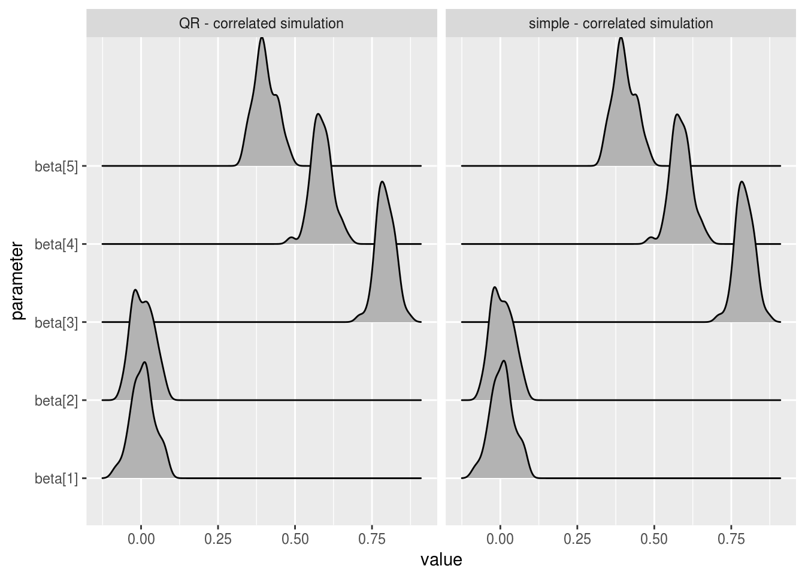
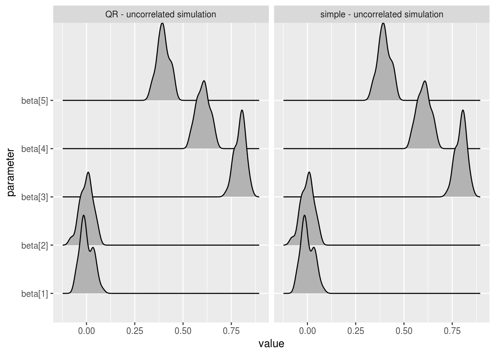
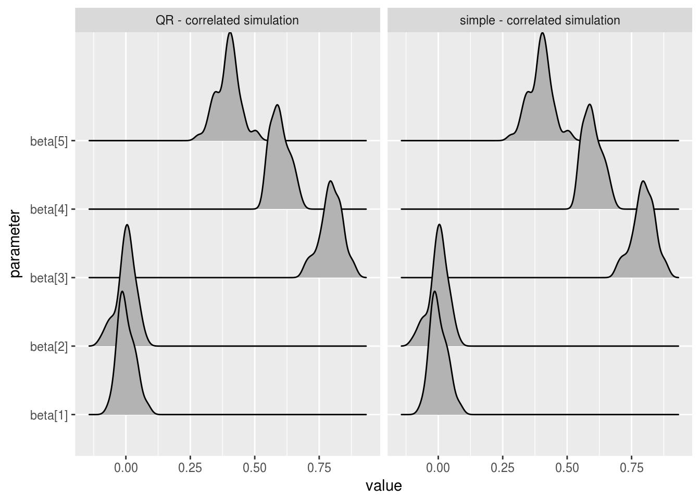
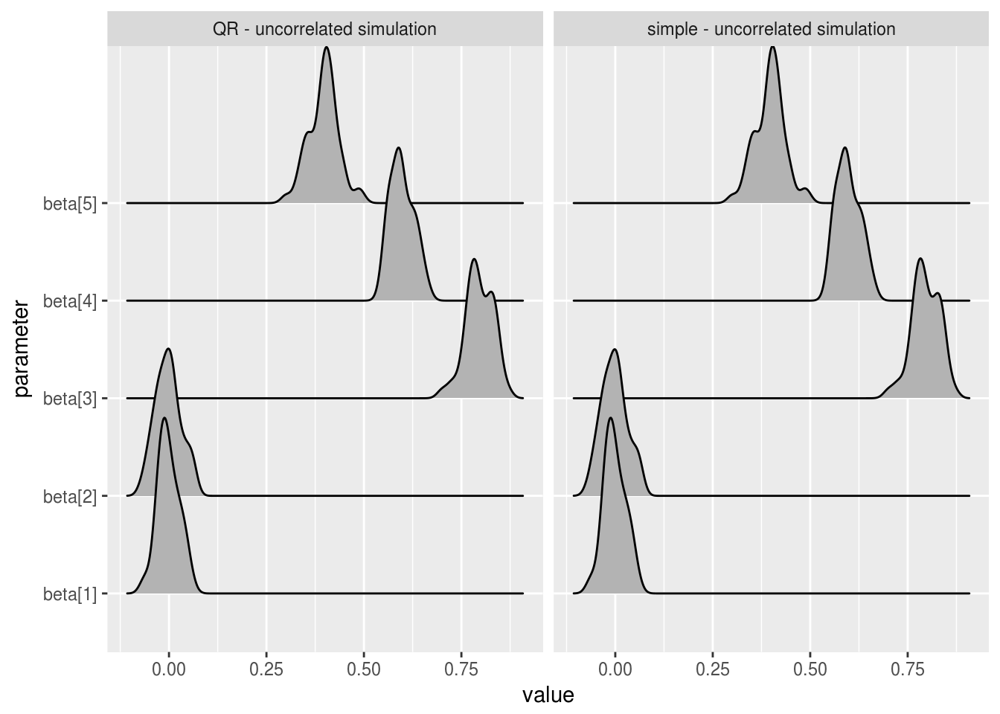
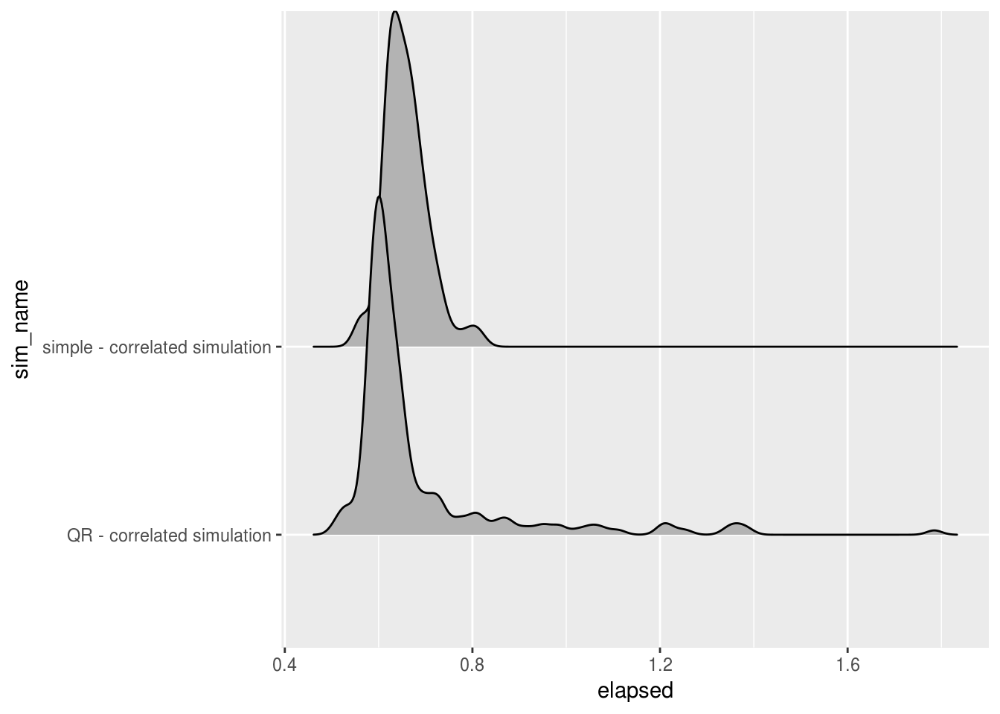
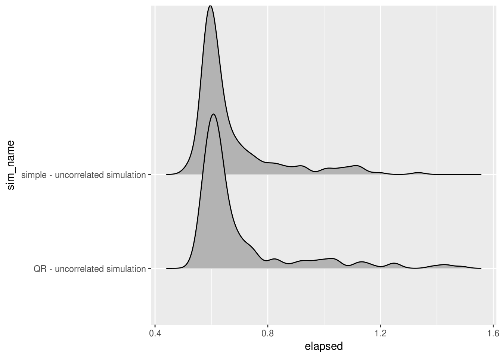

This document gives an end to end example of using the rstansim package to carry out a small simulation study using stan. It’s recommended as a first point of call to understand how the package works, but does not provided detailed documentation of all functionality.
After reading through this example, the below documents can provide further detailed documentation on specific elements:
Beyond that function documentation can be found here. [ADD LINK]
Any simulation study needs to start with a question about the behaviour of certain models/estimators under specific conditions. In this case, our question comes straight from the stan manual.
In the section on regression models, the first example of a multiple regression model in stan is a straightforward vectorised implementation, shown below.
// saved as simple_reg_model.stan
data {
int<lower=0> N; // number of data items
int<lower=0> K; // number of predictors
matrix[N, K] x; // predictor matrix
vector[N] y; // outcome vector
}
parameters {
real alpha; // intercept
vector[K] beta; // coefficients for predictors
real<lower=0> sigma; // error scale
}
model {
y ~ normal(x * beta + alpha, sigma); // likelihood
}However immediately after this is introduced another way to format a multiple regression, named the QR Reparameterization, is introduced. Again this is shown below.
// saved as qr_reg_model.stan
data {
int<lower=0> N; // number of data items
int<lower=0> K; // number of predictors
matrix[N, K] x; // predictor matrix
vector[N] y; // outcome vector
}
transformed data {
matrix[N, K] Q_ast;
matrix[K, K] R_ast;
matrix[K, K] R_ast_inverse;
// thin and scale the QR decomposition
Q_ast = qr_Q(x)[, 1:K] * sqrt(N - 1);
R_ast = qr_R(x)[1:K, ] / sqrt(N - 1);
R_ast_inverse = inverse(R_ast);
}
parameters {
real alpha; // intercept
vector[K] theta; // coefficients on Q_ast
real<lower=0> sigma; // error scale
}
model {
y ~ normal(Q_ast * theta + alpha, sigma); // likelihood
}
generated quantities {
vector[K] beta;
beta = R_ast_inverse * theta; // coefficients on x
}The stan manual provides more detail on the derivation of the QR parameterization, and the reasons for it’s efficiency. In short the reasons given to use the QR model are that it:
This small simulation study will explore the above three advantages to see if they hold in the case of small to medium predictor correlations, and to assess the magnitude of any observed differences between the two models.
In order to test our above hypotheses we’ll be simulating data two generative models. The models only differ in their parameter values and so can both be simulaetd using a single stan model (if there were structural differences then they would require different models).
One of the advantages of using rstansim to generate data for a simulation study is that it lets you use a stan model to specify the data, this gives you a huge degree of flexibility in how the simulated data will look, and can even let you draw your posterior samples using the same code that generated your data. For clarity here though we’ve generated a small stan model purely for the purposes of generating our simulated data, it’s shown below.
// saved as sim_data_model.stan
data {
int<lower=0> N; // number of data items
int<lower=0> K; // number of predictors
}
parameters {
real alpha; // intercept
vector[K] beta; // coefficients for predictors
real<lower=0> sigma; // error scale
corr_matrix[K] omega;
}
transformed parameters{
cov_matrix[K] cov_omega;
cov_omega = quad_form_diag(omega, rep_vector(1, K));
}
generated quantities {
matrix[N, K] sim_x; // simulated predictor data
vector[N] sim_y; // simulated outcome vector
for(i in 1:N) sim_x[i,] = multi_normal_rng(rep_vector(0, K), cov_omega)';
for(i in 1:N) sim_y[i] = normal_rng(alpha + sim_x[i] * beta, sigma)';
}This model is cut down to only be used for simulating the desired data. The important points to note are:
data or parameter blocks, as with a typical stan model.generated quantities block, using stan’s built in random number generators.sim_, this is good practice to differentiate simulated quantities in the model from user provided values. By default this sim_ will be dropped from the saved dataset so that the data can easily be used as model input (e.g. sim_x becomes just x).The simulate_data() function can take this model, along with data and parameter values to use, and use them to simulate multiple datasets containing the relevant data. When called simulate_data() has two effects; it saves all simulated datasets to a specified directory, and it returns an object of class stansim_data which acts as a ‘ticket’ for the saved datasets; providing summary information and able to be fed directly in to the fit_models() function below, simplifying the workflow.
For the purposes of our simulation we want to simulate 100 datasets, 50 of which will have uncorrelated x columns, and 50 of which will have correlations varying between 0 and 0.4. It’s expected that the benefits of the QR model will be greater for the correlated predictors datasets. The input data and parameters for these are specified below.
# set up independent covariance matrix
omega_uncorr <- diag(5)
omega_uncorr
## [,1] [,2] [,3] [,4] [,5]
## [1,] 1 0 0 0 0
## [2,] 0 1 0 0 0
## [3,] 0 0 1 0 0
## [4,] 0 0 0 1 0
## [5,] 0 0 0 0 1
# set up correlated covariance matrix
omega_corr <- matrix(rbind(c(1, 0, .2, .3, .4),
c(0, 1, .3, .4, .2),
c(.2, .3, 1, 0, .4),
c(.3, .4, 0, 1, .2),
c(.4, .2, .4, .2, 1)), 5, 5)
omega_corr
## [,1] [,2] [,3] [,4] [,5]
## [1,] 1.0 0.0 0.2 0.3 0.4
## [2,] 0.0 1.0 0.3 0.4 0.2
## [3,] 0.2 0.3 1.0 0.0 0.4
## [4,] 0.3 0.4 0.0 1.0 0.2
## [5,] 0.4 0.2 0.4 0.2 1.0
regression_input_data <- list("N" = 1000, "K" = 5)
regression_uncorr_params <- list("alpha" = 5, "beta" = c(0, 0, .8, .6, .4),
"sigma" = 1, "omega" = omega_uncorr)
regression_corr_params <-list("alpha" = 5, "beta" = c(0, 0, .8, .6, .4),
"sigma" = 1, "omega" = omega_corr)With our input values set up we can now simulate data easily.
library(rstansim)
# simulate data with uncorrelated predictors
uncorrelated_data <- simulate_data(
file = "sim_data_model.stan",
data_name = "uncorrelated multi-regression",
input_data = regression_input_data,
param_values = regression_uncorr_params,
vars = c("N", "K", "sim_x", "sim_y"),
nsim = 50,
path = "reg_data/uncorrelated"
)
# simulate data with correlated predictors
correlated_data <- simulate_data(
file = "sim_data_model.stan",
data_name = "correlated multi-regression",
input_data = regression_input_data,
param_values = regression_corr_params,
vars = c("N", "K", "sim_x", "sim_y"),
nsim = 50,
path = "reg_data/correlated"
)Looking in our working directory shows that the specified folders have been created and filled with our simulated datasets.
# see folders inside reg_data/
dir("reg_data")
## [1] "correlated" "uncorrelated"
# see first five files in reg_data/correlated/
dir("reg_data/correlated")[1:5]
## [1] "correlated multi-regression_10.rds"
## [2] "correlated multi-regression_11.rds"
## [3] "correlated multi-regression_12.rds"
## [4] "correlated multi-regression_13.rds"
## [5] "correlated multi-regression_14.rds"For a quick check that things have run as expected we’ll take a look at a given simuldated data file.
str(readRDS("reg_data/correlated/correlated multi-regression_1.rds"))
## List of 4
## $ N: num 1000
## $ K: num 5
## $ x: num [1:1000, 1:5] 1.862 0.266 0.622 0.537 -1.712 ...
## $ y: num [1:1000(1d)] 4.02 3.75 7.41 5.63 7.62 ...It’s good practice to check that the simulated data returns sensible parameter estimates when fitted to a single model before investing the time and resources into fitting models to every dataset.
# set the number of available cores to use
# core_num <- parallel::detectCores() - 1
test_data <- readRDS("reg_data/uncorrelated/uncorrelated multi-regression_1.rds")
test_fit <- rstan::stan(file = "simple_reg_model.stan", data = test_data)rstan::summary(test_fit)$summary
## mean se_mean sd 2.5% 25%
## alpha 4.99489977 0.0005395435 0.03412373 4.92920567 4.971334e+00
## beta[1] -0.01952893 0.0005124118 0.03240777 -0.08377418 -4.129069e-02
## beta[2] 0.02026169 0.0004922474 0.03113246 -0.04135261 -6.590125e-04
## beta[3] 0.81678169 0.0005248994 0.03319755 0.75154412 7.946678e-01
## beta[4] 0.65404834 0.0005176178 0.03273702 0.58873181 6.324120e-01
## beta[5] 0.33323066 0.0005242772 0.03315820 0.26927704 3.111978e-01
## sigma 1.01571925 0.0003782558 0.02392300 0.97081393 9.987825e-01
## lp__ -514.72602050 0.0430250965 1.97524670 -519.43564845 -5.158141e+02
## 50% 75% 97.5% n_eff Rhat
## alpha 4.99453158 5.018427e+00 5.06124332 4000.000 0.9996185
## beta[1] -0.01935526 1.831165e-03 0.04506135 4000.000 0.9997551
## beta[2] 0.01971286 4.263707e-02 0.07910599 4000.000 0.9999570
## beta[3] 0.81681151 8.390760e-01 0.88140469 4000.000 0.9996494
## beta[4] 0.65417415 6.753296e-01 0.71971028 4000.000 0.9998779
## beta[5] 0.33356382 3.559752e-01 0.39783862 4000.000 0.9996908
## sigma 1.01532359 1.032192e+00 1.06288225 4000.000 0.9996206
## lp__ -514.37873713 -5.132996e+02 -511.93078856 2107.652 1.0020570These values are all in the region we’d expect. The fit_models() function is used to fit a given stan model to multiple datasets, we can use the stansim_data object produced above as input pointing to our simulated datasets. Our study questions has a 2x2 design so fit_models needs called 4 times.
# fit simple model to uncorrelated data
stansim_output1 <- fit_models(sim_name = "simple - uncorrelated simulation",
sim_data = uncorrelated_data,
stan_args = list(file = "simple_reg_model.stan"))
# fit simple model to correlated data
stansim_output2 <- fit_models(sim_name = "simple - correlated simulation",
sim_data = correlated_data,
stan_args = list(file = "simple_reg_model.stan"))
# fit QR model to uncorrelated data
stansim_output3 <- fit_models(sim_name = "QR - uncorrelated simulation",
sim_data = uncorrelated_data,
stan_args = list(file = "qr_reg_model.stan"))
# fit QR model to correlated data
stansim_output4 <- fit_models(sim_name = "QR - correlated simulation",
sim_data = correlated_data,
stan_args = list(file = "qr_reg_model.stan"))Given that a realistic simulation study may have many combinations of model and data to fit, it’s likely that a large number of simulation objects will be created. To ease the analysis of results (and to make storage simpler) it’s recommended that you collect these objects into one. All data held by the individual objects is retained.
reg_study_col <- collect_simulations(
collection_name = "regression study collection",
stansim_output1,
stansim_output2,
stansim_output3,
stansim_output4)Now that our simulations have been ran and collected we can easily explore the data across all models and datasets. A good first check is that no datasets have an R-hat value greater than 1.1 (a necessary but not sufficient condition for convergence).
extract_data(
reg_study_col,
estimates = "Rhat",
values = function(x)
x > 1.1
)
## [1] sim_name dataset parameter estimate value
## <0 rows> (or 0-length row.names)This is a good first sign and suggests that our models have converged.
The first of the hypotheses to be tested is that the simple regression model and the QR reparamatization produce equivalent parameter estimates. This is checked for both datasets below.
# extract estimates for correlated datasets
correlated_beta_estimates <- extract_data(
reg_study_col,
sim_names = c("QR - correlated simulation", "simple - correlated simulation"),
parameters = c("beta"),
estimates = "mean")
# extract estimates for uncorrelated datasets
uncorrelated_beta_estimates <- extract_data(
reg_study_col,
sim_names = c("QR - uncorrelated simulation", "simple - uncorrelated simulation"),
parameters = c("beta"),
estimates = "mean")
# plot beta estimates for correlated datasets
library(ggplot2)
library(ggjoy)
ggplot(correlated_beta_estimates, aes(x=value, y = parameter)) +
geom_joy() +
facet_wrap(~sim_name)
# plot beta estimates for uncorrelated datasets
ggplot(uncorrelated_beta_estimates, aes(x=value, y = parameter)) +
geom_joy() +
facet_wrap(~sim_name)
We can see that the mean beta estimates are essentially identical over the two models, for both correlated values predictor variables and uncorrelated. In practice, you would want to run similar analysis across all parameters and estimates of relevance. Tail quantiles for example are less robust than mean estimates and so might show differences in chain behaviour that the above charts do not.
The second hypothesis concerned the total time taken to fit a model, at a very high level we can check this by extracting the total time taken to carry out each fit_models() call. Elapsed run times can be extracted from simulation or collection objects with extract_time_elapsed().
# extract total times (warmup and sampling) for correlated datasets
correlated_time <- extract_time_elapsed(
reg_study_col,
sim_names = c("QR - correlated simulation",
"simple - correlated simulation"),
stages = "total"
)
# extract total times (warmup and sampling) for correlated datasets
uncorrelated_time <- extract_time_elapsed(
reg_study_col,
sim_names = c("QR - uncorrelated simulation",
"simple - uncorrelated simulation"),
stages = "total"
)
# plot total elapsed time for correlated datasets
ggplot(correlated_time, aes(x=elapsed, y = sim_name)) + geom_joy()
# plot total elapsed time for uncorrelated datasets
ggplot(uncorrelated_time, aes(x=elapsed, y = sim_name)) + geom_joy()
When concerned with total run time, QR models tended to perform slightly quicker than the simple model when predictor variables were correlated, and slightly slower in cases where the predictors were uncorrelated. In both cases the QR model had a longer right tail, showing slightly less stability in the total time taken to fit the models.
Total time taken can be misleading when dealing with MCMC samples as it doesn’t capture the amount of sampling information captured, which can vary a lot from model to model. It’s easy to extract the number of effective samples for all four fitted models and compare them by parameter.
# extract the effective number of parameters samples for correlated datasets
n_eff_correlated <- extract_data(reg_study_col,
sim_names = c("QR - correlated simulation", "simple - correlated simulation"),
parameters = c("beta", "sigma", "lp__"),
estimates = "n_eff")
# extract the effective number of parameters samples for uncorrelated datasets
n_eff_uncorrelated <- extract_data(reg_study_col,
sim_names = c("QR - uncorrelated simulation", "simple - uncorrelated simulation"),
parameters = c("beta", "sigma", "lp__"),
estimates = "n_eff")
# plot correlated datasets effective samples by parameter
ggplot(n_eff_correlated, aes(x = value, y = sim_name)) +
geom_jitter() +
facet_wrap(~parameter)
# plot uncorrelated datasets effective samples by parameter
ggplot(n_eff_uncorrelated, aes(x = value, y = sim_name)) +
geom_jitter() +
facet_wrap(~parameter)
The results are close to identical for both models, with all shared parameters showing a near perfect 4000 effective samples per model (4 chains * 1000 samples) with the exception of the log posterior. The only noticable difference between models is a very slightly higher number of effective samples of the log posterior for the QR model when fitting to datasets with correlated predictor variables.
The data and models used here are intended primarily as an example of rstansim functionality, not as a rigourous exploration of the QR decomposition approach to Bayesian regression. Such a study would explore a wider range of conditions, especially higher correlations between predictor variable where the difference between the straightforward and QR models becomes very apparent. But at a minimum these results show that the QR regression is not necessary for good sampling behaviour when the sample size is high (N = 1000) and the predictor correlations small (< .4).